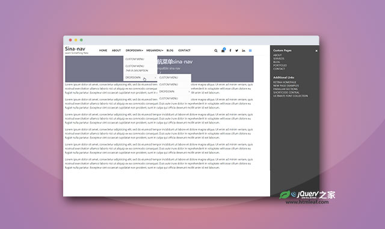

学习资源
文档 API
门户&社区
组织团队
框架类库
UI框架
JavaScript相关
CSS相关
代码素材/片段
模板插件
可视化
编译&构建&打包
编译器/IDE
字体图标
视觉设计
Vue生态
小程序相关
大牛博客
Chrome插件
辅助开发工具
其他工具
前端大杂烩
内容管理
其他网站
作业环境
jQuery固定侧边栏插件ssMenu
sticky Side Navigation jQuery ssMenu
jQuery之家
返回下载页
Choose theme
The following are built in and suitable color scheme for side sticky menu.
Set Default
如果你喜欢这个插件，那么你可能也喜欢:
移动优先的jquery多级导航菜单插件

Bootstrap4导航菜单sina-nav